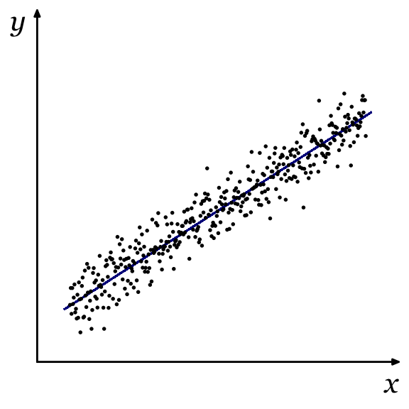
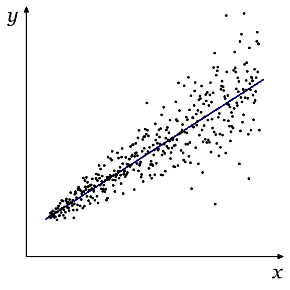
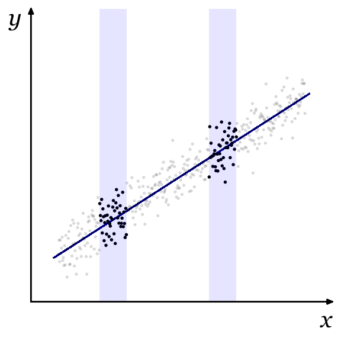
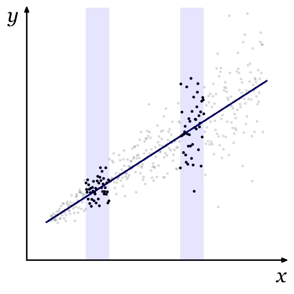

3 Heteroscedasticidad
3.1 Introducción
Homoscedasticidad (I)


Homoscedasticidad. La dispersión alrededor de la función de regresión poblacional, FRP, es constante: \mathop{\mathrm{var}}(u_i | x_i) = \sigma^2.
Homoscedasticidad (y II)


Homoscedasticidad. Todas las observaciones son igual de informativas a la hora de determinar por donde pasa la FRP.
Heteroscedasticidad (I)
Heteroscedasticidad. La dispersión alrededor de la FRP cambia con los valores de la explicativa: \mathop{\mathrm{var}}(u_i | x_i) = \sigma^2_i.
Heteroscedasticidad (y II)
Heteroscedasticidad. Algunas observaciones contienen menos información para estimar la FRP.
3.2 Consecuencias de la heteroscedasticidad
Insesgadez y consistencia
La heteroscedasticidad no afecta al supuesto RLM.4.
Si se cumplen los supuestos RLM.1 a RLM.4, el estimador MCO es insesgado y consistente aunque exista heteroscedasticidad.
Varianza de los estimadores de MCO
Cuando hay heteroscedasticidad, las fórmulas usuales de las varianzas de los estimadores de MCO, \mathop{\mathrm{var}}(\hat{\beta}), no son válidas incluso en muestras grandes.
Contraste de hipótesis
Cuando el término de error es heteroscedástico, los procedimientos habituales de contraste de hipótesis dejan de ser válidos incluso en muestras grandes.
Eficiencia
Con heteroscedasticidad, MCO no es el estimador lineal insesgado óptimo.
Si se conoce el patrón de la heteroscedasticidad es posible construir estimadores más eficientes que MCO.
3.3 Inferencia robusta a heteroscedasticidad
Errores típicos robustos
Un procedimiento común con datos de corte transversal:
Estimar los parámetros por MCO.
Modificar el cálculo de los errores típicos de los estimadores para que sean válidos (asintóticamente) haya o no haya heteroscedasticidad.
Varianza del estimador MCO
Se cumplen los supuestos RLM.1 a RLM.4 en el modelo de regresión simple: y_i = \beta_0 + \beta_1 x_i + u_i.
Heteroscedasticidad: \mathop{\mathrm{var}}(u_{i} | x_{1i}) = \sigma^{2}_{i}.
La varianza del estimador MCO es: \mathop{\mathrm{var}}(\hat{\beta}_{1}) = \frac{\sum(x_{i} - \bar{x})^{2}\sigma^2_{i}}{% \Big[\sum(x_{i} - \bar{x})^{2}\Big]^{2}}.
Estimación robusta de \mathop{\mathrm{var}}(\hat{\beta})
Halbert White mostró que se puede obtener una estimación consistente de \mathop{\mathrm{var}}(\hat{\beta}) exista o no heteroscedasticidad: \widehat{\mathop{\mathrm{var}}}_R(\hat{\beta}_{1}) = \frac{\sum(x_{i} - \bar{x})^{2} \hat{u}^2_i}{ \Big[\sum(x_{i} - \bar{x})^{2}\Big]^{2}}.
Se han descrito alternativas a la propuesta original de White que son equivalentes asintóticamente pero que, bajo ciertas condiciones, son superiores en muestras pequeñas.
Contrastes t robustos
Un estadístico asintóticamente válido para contrastar la hipótesis nula \beta_j = b se construye con la estimación de MCO, \hat{\beta}_j, y el error típico robusto a heteroscedasticidad, \mathop{\mathrm{et}}_R(\hat{\beta}_j): t_{j} = \frac{\hat{\beta}_{j} - b}{\mathop{\mathrm{et}}_{R}(\hat{\beta}_{j})}.
Contrastes de hipótesis lineales
En presencia de heteroscedasticidad no es válido el estadístico F que compara las \mathop{\mathrm{SCR}} o los R^2 de los modelos restringido y no restringido. Tampoco existe una versión robusta de este contraste.
Para contrastar restricciones lineales generales sobre los parámetros del modelo, utilizamos contrastes de Wald construidos con estimaciones de \mathop{\mathrm{var}}(\hat{\boldsymbol{\beta}}) robustas a heteroscedasticidad.
3.4 Contrastes de heteroscedasticidad
¿Por qué?
Si no hay grandes problemas de heteroscedasticidad no sería necesario usar errores típicos robustos.
MCO es el estimador óptimo (en cierto sentido) cuando el término de error es homoscedástico. Si hay heteroscedasticidad quizá queramos emplear estimadores más eficientes que MCO.
Contrastes de especificación
Tratamos de verificar si se cumple alguno de los supuestos sobre el modelo poblacional.
Frecuentemente la hipótesis nula afirma que no hay problemas de especificación y el estimador MCO tiene buenas propiedades.
A menudo se utiliza un contraste de multiplicadores de Lagrange.
Contrastes de heteroscedasticidad
La hipótesis nula es el supuesto RLM.5: H_0\!: \mathop{\mathrm{var}}(u_i | x_{1i}, \dots, x_{ki}) = \sigma^2.
Bajo la hipótesis alternativa hay heteroscedasticidad: H_1\!: \mathop{\mathrm{var}}(u_i | x_{1i}, \dots, x_{ki}) = \sigma^2_i.
Enfoque general
Podemos reescribir la hipótesis nula como: H_0\!: \mathop{\mathrm{E}}(u^2_i | x_{1i}, \dots, x_{ki}) = \sigma^2.
Si no se cumple H_0 la esperanza condicional de u^2 depende de los regresores. Si la relación fuera lineal: u^2 = \delta_0 + \delta_1 x_{1} + \dots + \delta_k x_{k} + \text{error}.
Si observáramos u_i podríamos contrastar homoscedasticidad por medio de la hipótesis nula: H_0\!: \delta_1 = \delta_2 = \dots = \delta_k = 0
Regresión auxiliar
Los contrastes modernos de heteroscedasticidad utilizan una regresión auxiliar cuya variable dependiente es \hat{u}^2.
Cada contraste se diferencia por los k_{aux} regresores que se incluyen.
El estadístico \mathop{\mathrm{LM}}= n R^2_{aux} se distribuye bajo la H_0 como una \chi^2_{k_{aux}}.
También puede usarse el contraste de significación de la regresión: F = \frac{R^2_{aux} / k_{aux}}{(1 - R^2_{aux}) / (n - k_{aux} - 1)}.
Contraste de Breusch-Pagan
Contraste de Breusch-Pagan: ejemplo
Modelo de regresión con 3 explicativas: y_i = \beta_0 + \beta_1 x_{1i} + \beta_2 x_{2i} + \beta_3 x_{3i} + u_i.
Después de estimar por MCO se obtienen los residuos \hat{u}.
Regresión auxiliar: \hat{u}^2_i = \delta_0 + \delta_1 x_{1i} + \delta_2 x_{2i} + \delta_3 x_{3i} + \text{error}.
Se estima por MCO la regresión auxiliar y se calcula el estadístico \mathop{\mathrm{LM}} o el estadístico F de la regresión auxiliar.
Contraste de White: motivación
White demuestra que la heteroscedasticidad sólo es problemática si la varianza condicional de u depende de:
las variables explicativas: x_1, x_2, \dots, x_k;
sus cuadrados: x^2_1, x^2_2, \dots, x^2_k; o
sus productos cruzados: x_1 \cdot x_2, x_1 \cdot x_3, \dots
Contraste de White
La regresión auxiliar incluye las explicativas, sus cuadrados y sus productos cruzados.
Pueden aparecer problemas de multicolinealidad perfecta en la regresión auxiliar, especialmente si hay variables ficticias. En ese caso, habría que eliminar de la regresión auxiliar los regresores redundantes.
Contraste de White: ejemplo
Modelo de regresión con 3 explicativas: y_i = \beta_0 + \beta_1 x_{1i} + \beta_2 x_{2i} + \beta_3 x_{3i} + u_i.
Después de estimar por MCO se obtienen los residuos \hat{u}.
Regresión auxiliar: \begin{align*} \hat{u}^2_i = \delta_0 &+ \delta_1 x_{1i} + \delta_2 x_{2i} + \delta_3 x_{3i} + \delta_4 x^{2}_{1i} + \delta_{5} x^{2}_{2i} + \delta_6 x^{2}_{3i} \\ &+ \delta_7 x_{1i} x_{2i} + \delta_8 x_{1i} x_{3i} + \delta_9 x_{2i}x_{3i} + \text{error}. \end{align*}
Se estima por MCO la regresión auxiliar y se calcula el estadístico \mathop{\mathrm{LM}} o el estadístico F de la regresión auxiliar.
Contraste de White: alternativas (I)
En la regresión auxiliar del contraste de White hay un gran número de parámetros, lo que puede traducirse en baja potencia (capacidad de detectar heteroscedasticidad cuando realmente está presente).
Para mitigar ese problema, en ocasiones se omiten los productos cruzados en la regresión auxiliar: \hat{u}^2_i = \delta_0 + \delta_1 x_{1i} + \delta_2 x_{2i} + \delta_3 x_{3i} + \delta_4 x^{2}_{1i} + \delta_{5} x^{2}_{2i} + \delta_6 x^{2}_{3i} + \text{error}.
Contraste de White: alternativas (y II)
Wooldridge propone una variante del contraste de White donde sólo se incluyen en la regresión auxiliar las predicciones de MCO, \hat{y}, y sus cuadrados, \hat{y}^2: \hat{u}^2_i = \delta_0 + \delta_1 \hat{y}_{i} + \delta_2 \hat{y}^2_{i} + \text{error}.
3.5 Ineficiencia de MCO
Heteroscedasticidad
Aquí iba la figura Figura 3.2 (a).
Con heteroscedasticidad la dispersión alrededor de la FRP cambia con los valores de la explicativa.
Ineficiencia de MCO
Aquí iba la figura Figura 3.2 (b).
La ineficiencia de MCO se debe a que se tratan por igual todas las observaciones, aunque no todas contienen información igual de precisa para estimar la FRP.
Estimación eficiente
Estimación eficiente con heteroscedasticidad:
Se asigna un peso diferente a cada observación.
Las observaciones más imprecisas reciben ponderaciones menores.
Mínimos Cuadrados Generalizados
El estimador eficiente cuando existe heteroscedasticidad pertenece a la familia de Mínimos Cuadrados Generalizados (MCG). Los estimadores MCG consisten en:
Transformar el modelo de forma que se cumplan los supuestos de Gauss-Markov.
Estimar el modelo transformado por MCO.
3.6 Mínimos cuadrados ponderados
Modelo de regresión
El modelo de regresión cumple los supuestos RLM.1 a RLM.4: y_i = \beta_0 + \beta_1 x_{1i} + \beta_2 x_{2i} + \dots + \beta_k x_{ki} + u_i.
Heteroscedasticidad
La varianza del término de error puede expresarse como: \mathop{\mathrm{var}}(u_i | x_{1i}, x_{2i}, \dots, x_{ki}) = \sigma^2 h(x_{1i}, x_{2i}, \dots, x_{ki}) = \sigma^2 h(\boldsymbol{x}_i).
La función h(\boldsymbol{x}_i) toma siempre valores positivos y expresa la relación entre las explicativas y la varianza del término de error.
La constante desconocida \sigma^2 es positiva.
Heteroscedasticidad conocida
- Supondremos que la función h(\boldsymbol{x}_i) es conocida y no depende de parámetros desconocidos.
Transformación del modelo
Si conocemos h_i = h(\boldsymbol{x}_i) podemos dividir el modelo original por \sqrt{h_i}.
El término de error del modelo transformado, u^*_i = u_i / \sqrt{h_i}, es homoscedástico: \begin{align*} \mathop{\mathrm{var}}(u_i^*| \boldsymbol{x}_i) &= \mathop{\mathrm{E}}\big((u_i/\sqrt{h_i})^2| \boldsymbol{x}_i\big) \\ &= (1/h_{i})\mathop{\mathrm{E}}(u^2| \boldsymbol{x}_i) \\ &= (1/h_i) \sigma^2 h_i \\ &= \sigma^2. \end{align*}
Ejemplo
Modelo original. Si x_{2i} siempre toma valores positivos y h(x_{1i}, x_{2i}) = x_{2i}: \begin{gather*} y_i = \beta_0 + \beta_1 x_{1i} + \beta_2 x_{2i} + u_i, \\ \mathop{\mathrm{var}}(u_i | x_{1i}, x_{2i}) = \sigma^2 x_{2i}. \end{gather*}
Modelo transformado: \begin{gather*} y^*_i = \beta_0 x^*_{0i} + \beta_1 x^*_{1i} + \beta_2 x^*_{2i} + u^*_i, \\ \mathop{\mathrm{var}}(u^*_i | x_{1i}, x_{2i}) = \sigma^2. \end{gather*} donde \begin{equation*} y^*_i = y_i / \sqrt{x_{2i}},\quad x^*_{0i} = 1 / \sqrt{x_{2i}},\quad x^*_{1i} = x_{1i} / \sqrt{x_{2i}},\quad x^*_{2i} = x_{2i} / \sqrt{x_{2i}}. \end{equation*}
Mínimos Cuadrados Ponderados
Estimador de Mínimos Cuadrados Ponderados, (MCP):
La varianza del término de error es proporcional a h_i que es una función conocida de variables observables: \mathop{\mathrm{var}}(u_i | x_{1i}, x_{2i}, \dots, x_{ki}) = \sigma^2 h_i.
Se transforma el modelo dividiendo por \sqrt{h_i}.
Se estima el modelo transformado por MCO.
Propiedades de MCP
Si se cumplen los supuestos RLM.1 a RLM.4 el estimador MCP es insesgado y consistente.
El modelo transformado cumple con los supuestos de Gauss-Markov, por lo que MCP es el estimador lineal insesgado óptimo.
Predicciones y residuos
El modelo transformado sólo sirve para obtener las estimaciones de MCP de los parámetros: \tilde{\beta}_0, \tilde{\beta}_1, \dots, \tilde{\beta}_k.
Para calcular las predicciones usamos las variables originales sin transformar: \tilde{y}_i = \tilde{\beta}_{0} + \tilde{\beta}_{1} x_{1i} + \dots + \tilde{\beta}_{k} x_{ki}.
También usamos las variables originales para calcular los residuos: \tilde{u}_i = y_i - \tilde{y}_i = y_i - \tilde{\beta}_{0} - \tilde{\beta}_{1} x_{1i} - \dots - \tilde{\beta}_{k} x_{ki}.
Suma ponderada de los cuadrados de los residuos
El estimador MCP minimiza la suma ponderada de residuos al cuadrado: \sum_{i} \tilde{u}^{2}_{i}/h_{i} = \sum_{i} \big( y_{i} - \tilde{\beta}_{0} - \tilde{\beta}_{1} x_{1i} - \dots - \tilde{\beta}_{k} x_{ki} \big)^{2}/h_{i}.
El peso o ponderación, w_i, que se asigna a cada observación es la inversa de h_i, w_i = 1 / h_i.
Bondad del ajuste
En general, no es posible comparar el R^2 obtenido con MCP y el obtenido con MCO:
Diferentes programas informáticos calculan de forma diferente el R^2 de MCP y los distintos métodos no son equivalentes.
Los R^2 que se calculan para MCP no se pueden interpretar como medidas de bondad del ajuste.
3.7 Mínimos cuadrados ponderados factibles
Heteroscedasticidad desconocida
Hasta ahora hemos supuesto que conocemos h_i. ¿Qué podemos hacer en caso contrario?
Aunque no conozcamos la forma exacta de la heteroscedasticidad, con frecuencia sabemos que está relacionada con algunas de las variables del modelo.
El estimador de Mínimos Cuadrados Ponderados Factibles (MCPF) se obtiene de forma análoga al estimador de MCP salvo que utiliza una estimación de h_i para obtener el modelo transformado.
Modelización de la heteroscedasticidad
Especificaremos un modelo para la varianza del término de error que dependa de variables observables y de parámetros desconocidos. Por ejemplo, podemos escribir: \mathop{\mathrm{var}}(u_i | \boldsymbol{x}_{i}) = \sigma^2 h(\boldsymbol{x}_{i}) donde h(\boldsymbol{x}_{i}) = \exp(\delta_{0} + \delta_{1} x_{1i} + \dots + \delta_{k} x_{ki}), y \delta_0, \delta_1, \dots, \delta_k son parámetros desconocidos. La función exponencial garantiza que h(\boldsymbol{x}_{i}) > 0 sean cuales sean los valores de los parámetros.
Estimación de h_i (I)
Varianza condicional del término de error: \mathop{\mathrm{E}}(u_i^2 | \boldsymbol{x}_{i}) = \sigma^2 \exp(\delta_{0} + \delta_{1} x_{1i} + \dots + \delta_{k} x_{ki}). Si observásemos el término de error, u_i, podríamos estimar: \log(u_i^2) = \alpha_0 + \delta_{1} x_{1i} + \dots + \delta_{k} x_{ki} + \text{error}. Para poder estimar los parámetros de la regresión anterior, reemplazamos u_i por los residuos de MCO, \hat{u}_i.
Estimación de h_i (y II)
Estimamos por MCO los parámetros de la función de regresión: \log(\hat{u}_i^2) = \alpha_0 + \delta_{1} x_{1i} + \dots + \delta_{k} x_{ki} + \text{error}.
Obtenemos \hat{h}_i a partir de las predicciones de la regresión anterior: \hat{h}_i = \exp(\hat{\alpha}_0 + \hat{\delta}_{1} x_{1i} + \dots + \hat{\delta}_{k} x_{ki}).
Mínimos Cuadrados Ponderados Factibles
Procedimiento para la estimación por Mínimos Cuadrados Ponderados Factibles (MCPF):
+ATTR_LATEX: :options [label=:, wide=0pt, leftmargin=1em]
Se estima el modelo por MCO y se guardan los residuos \hat{u}_i.
Se estima por MCO una regresión de \log(\hat{u}^2_i) sobre las explicativas.
Se obtiene \hat{h}_i tomando la exponencial de las predicciones de la regresión del paso anterior.
Se estima el modelo por MCP usando 1/\hat{h}_i como ponderaciones.
Propiedades de MCPF
Al usar una estimación de h_i, MCPF no es insesgado ni lineal.
Si se cumplen los supuestos RLM.1 a RLM.4 el estimador de MCPF es consistente.
Si la especificación de la heteroscedasticidad es correcta, MCPF es asintóticamente más eficiente que MCO.
Especificaciones alternativas
Se han usado especificaciones alternativas de la heteroscedasticidad. En consecuencia se modificaría el Paso 2 del procedimiento para obtener el estimador MCPF descrito antes:
Regresar \log(\hat{u}^2_i) sobre un subconjunto de las explicativas.
Regresar \log(\hat{u}^2_i) sobre las explicativas, sus cuadrados y productos cruzados.
Regresar \log(\hat{u}^2_i) sobre las predicciones, \hat{y}_i, y sus cuadrados, \hat{y}^2_i.
Los restantes pasos del procedimiento de estimación no se alterarían.
3.8 Otras cuestiones
Comparación con MCO
MCO y MCP(F) son estimadores consistentes cuando se cumplen los supuestos RLM.1 a RLM.4.
Grandes diferencias en las estimaciones de MCO y de MCP(F) indicarían el posible incumplimiento de otras de las hipótesis de Gauss-Markov.
Inferencia robusta
Si el supuesto sobre la naturaleza de la heteroscedasticidad es correcto, los contrastes t y F calculados a partir de las estimaciones MCP(F) tienen validez asintótica.
Si el supuesto no captura toda la heteroscedasticidad, sería necesario usar un estimador robusto de \mathop{\mathrm{var}}(\tilde{\beta}) después de la estimación MCP(F).
En general, es recomendable el uso de métodos de inferencia robustos a heteroscedasticidad con los estimadores de MCO y de MCP(F).